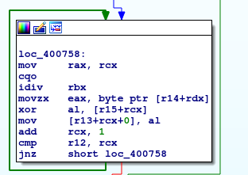
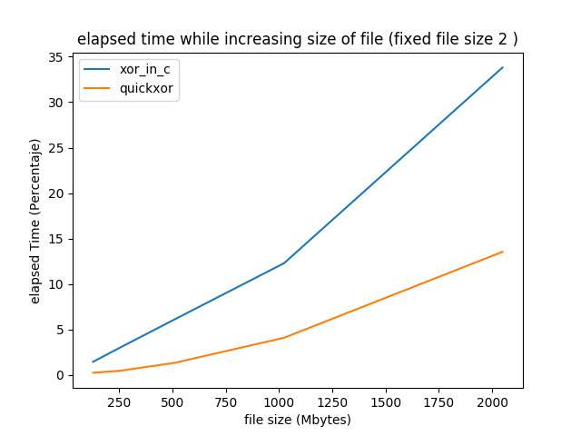

Quickxor
Description
Quickxor is an assembly x86 written tool that performs XOR between two files. It was developed with two goals:
- Make the XOR much faster than usual tools
- Make fun during the journey (yes, I like developing in assembler ;) )
Quickxor makes use of XMM registers, which allows to operate with 16 bytes at the same time.
Source code
The source code can be found here, together with a set of tools for benchmarking against custom tools.
How it works
Quickxor is able to perform XOR between any file of arbitrary size (tested up to 4GB) and a key of maximum 16 bytes. The reason of the latter condition is the main way it works.
Byte by byte xoring
Let's suppose that we want to XOR a file of 2GB against a key of 2 bytes.
If we were coding in Python or even in C we will do that byte by byte. For example:
unsigned int i;
for(i=0; i < file_len; i++){
result_buffer[i] = key_buffer[i%key_len] ^ file_buffer[i];
}
If we compile a program that performs this (even with -O2 GCC flag), the assembly code created will be: 
This was compiled with gcc version 9.2.1 20191102
As you can quickly see the xor line is using the register al which means that it is being carried out byte by byte. Furthermore, this implies that for each byte, it will have to access memory, meaning a lot of accesses!.
Faster way of xoring?
Quickxor tries to decrease the amount of accesses by operating with several bytes at the same time.
;xmm2 holds the super key
mov xmm1, [ptr_file] ; Reading 16 bytes from the file
pxor xmm1, xmm2 ; Xor 16 bytes at once.
But the question is.. How we build xmm2? Let's see.. if we have a key of 2 bytes... and registers up to 16 bytes. We can make fit the key 8 times inside the register and then perform 16 XOR's in one instruction! At the very beginning, Quickxor will create a "super key": an XMM register with the maximum number of times that the key fixes inside it. These are the possible cases:
| Key length | # times it fits | # of bytes |
|---|---|---|
| 1 | 16 | 16 |
| 2 | 8 | 16 |
| 3 | 5 | 15 |
| 4 | 4 | 16 |
| 5 | 3 | 15 |
| 6 | 2 | 12 |
| 7 | 2 | 14 |
| 8 | 2 | 16 |
| 9 | 1 | 9 |
| 10 | 1 | 10 |
| 11 | 1 | 11 |
| 12 | 1 | 12 |
| 13 | 1 | 13 |
| 14 | 1 | 14 |
| 15 | 1 | 15 |
| 16 | 1 | 16 |
Reading the table we can infer that, in the worst case scenario, Quickxor will operate with 9 bytes at the same time. Which means that is much faster than the afore showed naive tool (9x?)
General operation
To perform such thing, Quickxor first defines the number of:
- Number of rounds: Number of times that we will have to perform a xor (except last round)
- Number of bytes that will be xored in each round: Based on the key (what the previous table shows)
- Number of bytes that will have to be xored in the last round: This have to be treated differently.
If we are working with a file of size 22 bytes with a key of 9:
- Will be 22/9 (entire division) = 2
- Will be 9 (according to table)
- 22%9 = 4.
In other words, this means that Quickxor will perform 2 rounds of Xoring 9 bytes, and then separately, will xor 4 bytes. The last part is the most difficult and that's the reason why it should be treated differently. Quickxor should and do care about invalid read/write access. Performing and out of bounds read/write may cause a segmentation fault in the program. That was why the last part is performed reading and writing byte by byte.
Maybe it sounds easy and clear, but it wasn't.. at least for me...
Ensure avoiding invalid read/write access
When we operate byte by byte, it's easy to have control of the boundaries. But.. what happens when we want to read 16 bytes at once?
During my journey I faced an issue that wasn't easy to catch: Let's use the same example as before: a file of size 22 bytes with a key of 9.
One of the Quickxor main cycles was in charge of detecting when it was time to jump the last round (byte by byte xoring). The following pseudo-code tries to depict it:
while (number_of_leftover_bytes < number_of_bytes_to_xor_by_round){
grab_16_bytes_from_file()
xor_number_of_bytes()
write_xor_result_to_result_buffer()
number_of_leftover_bytes -= number_of_bytes_to_xor_by_round
}
Maybe somebody can spot the error very fast (also because in pseudo code or even in C may be easier). I can assure you that in the assembly code was not that easy.
Let's apply our example to find the error. After the first round, the number_of_leftover_bytes will be 13 (22-9), meaning that the condition will be accomplish successfully and a second round of the cycle will be executed. However, the pointer to the file is just 13 bytes far from the end. When the first function of the cycle is performed, we will try to read 16 bytes and an invalid read will be executed (by 3 bytes in this case).
This type of issues weren't easy to spot. That's why I developed a set of (functional and memory) tests to ensure that every change in the assembly code doesn't break anything.
Benchmark results
While developing Quickxor, I wanted to test that what I thought in theory was actually working (xoring multiple bytes in one intruction was faster than byte by byte). So, I developed a simple C script that performs a byte by byte xor. Its code can be found in the repository as well.
Together with this tool, I developed a kind of framework, that allows you compare the speed of Quickxor against any tool of your preference (for more info refer to the README.md).
In this section I'll show the output of this framework using both tool developed: Quickxor, and my C version called xor_in_c (very original). (both tools have the source code, except for the part that actually performs the xor).
Disclaimer:
- All tests were performed in the same machine.
- xor_in_c was compiled using "-O2".

As we can see clearly in this graph, the curve for xor_in_c is much steeper, and increases almost in a linearly. While Quickxor has a smoother curve. The difference between times is easy spottable and allows to quickly understand which one operates faster.
I hope you enjoy the tool. Feel free to send me back some feedback and to propose improvements!
@lmkalg.